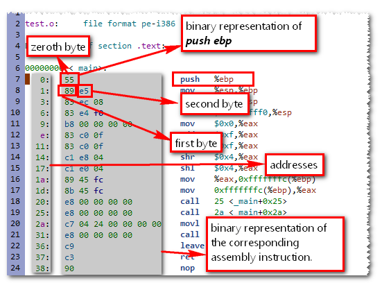

-
Assembling
Consider the following code
It is the process of converting a given assembly language program in to its equivalent machine language codemain() { printf("Vineel"); }Assume this file is saved as test.c issue the commandgcc -S -masm=intel test.c
This command as usually creates the plain assembly language representation(program) of the above code with a file name test.s.file "test.c" .intel_syntax .def ___main; .scl 2; .type 32; .endef .section .rdata,"dr" LC0: .ascii "Vineel\0" .text .globl _main .def _main; .scl 2; .type 32; .endef _main: push ebp mov ebp, esp sub esp, 8 and esp, -16 mov eax, 0 add eax, 15 add eax, 15 shr eax, 4 sal eax, 4 mov DWORD PTR [ebp-4], eax mov eax, DWORD PTR [ebp-4] call __alloca call ___main mov DWORD PTR [esp], OFFSET FLAT:LC0 call _printf leave ret .def _printf; .scl 3; .type 32; .endefNow when this test.s is given to the assembler it creates a binary file(object file) containing the machine code representation of above instructions.
So effectively push ebp is represented as 55(0101 0101) and mov ebp,esp is represented as 89 e5(1000 1001 1110 0101) similarly the entire file(test.s) is converted to machine code. Each and every instruction has its own opcode, the number 55 is the opcode for the instruction push ebp. You can get the complete instruction formats and their opcode information from Intel.
By using
gcc -c test.s
orgcc -c test.c
we get an object file test.o(In TC it is test.obj)
-c Instructs the compiler to stop after the completion of assembling process.i.e.. After the generation of object file (.obj file or .o file)Though object file also contains some extra information(headers,symbols) along with the machine code, for the time being assume it contains only machine code for the source program.
** As test.o is a binary file you cannot see its contents by using notepad.
-
Disassembling
It is exactly the reverse process of assembling. Given a binary file, The tool(disassembler) will decode the bits in to human readable assembly instructions.We use a program called objdump.exe(object dumper) to know the ingredients of test.o. It disassembles the given test.o. But the beauty of objdump.exe is, it also displays the opcode information(binary information) of each instruction.
objdump -d test.o-d Informs the object dumper to perform disassembling on the file test.oonce this is executed we get the following information.

Output produced by objdump.exe after DisassemblingIn the above picture the column shown by "addresses arrow" represent the addresses of instructions sequentially. The picture also confirms that Intel instruction format is not of fixed length because you will find that some instructions take 1 byte and other take more than 1 byte.
The most important feature of these object files is they are relocatable.